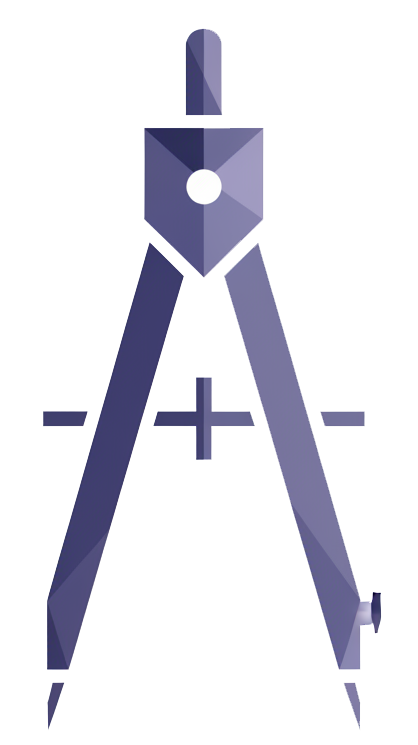
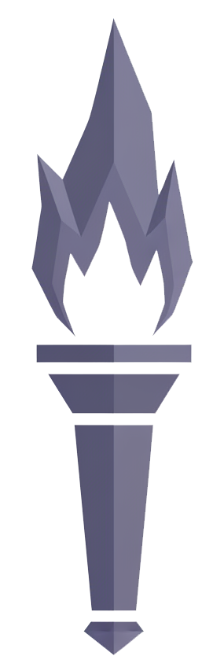
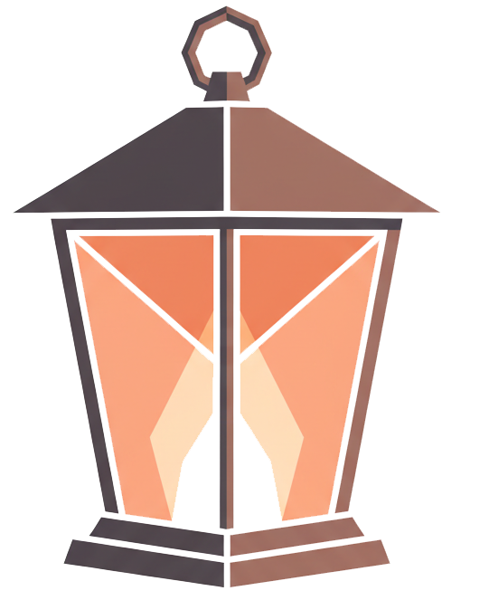
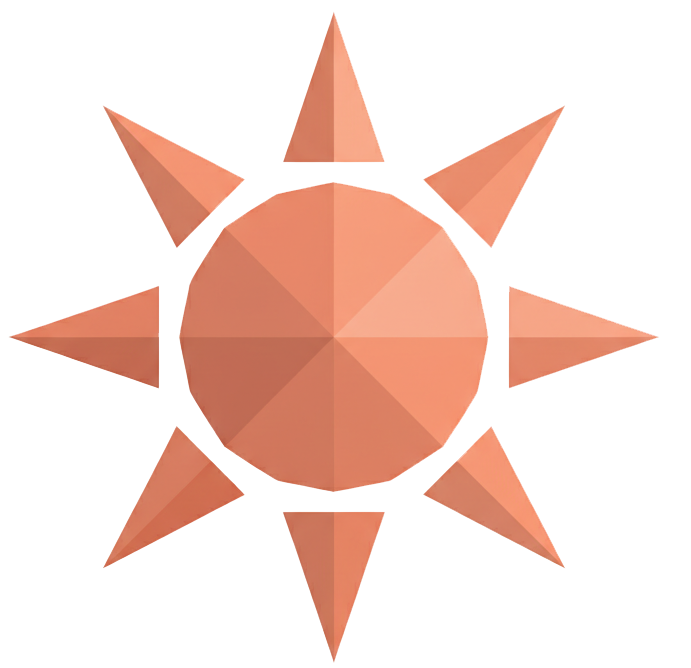
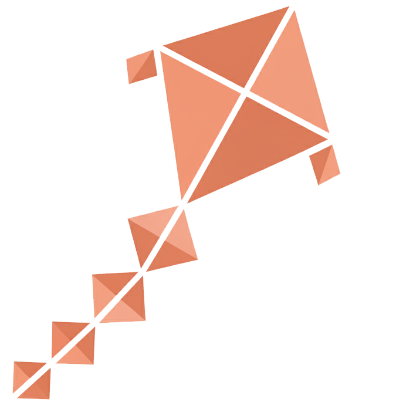
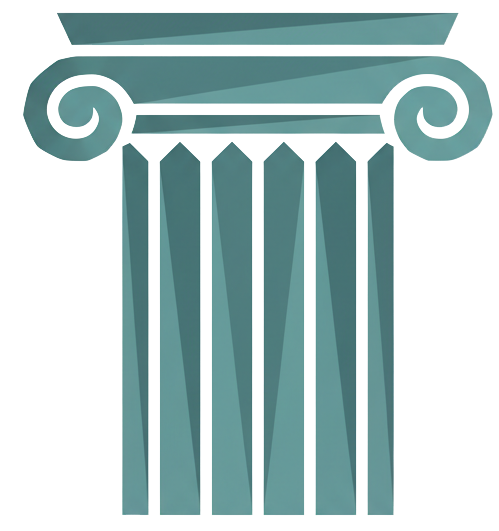
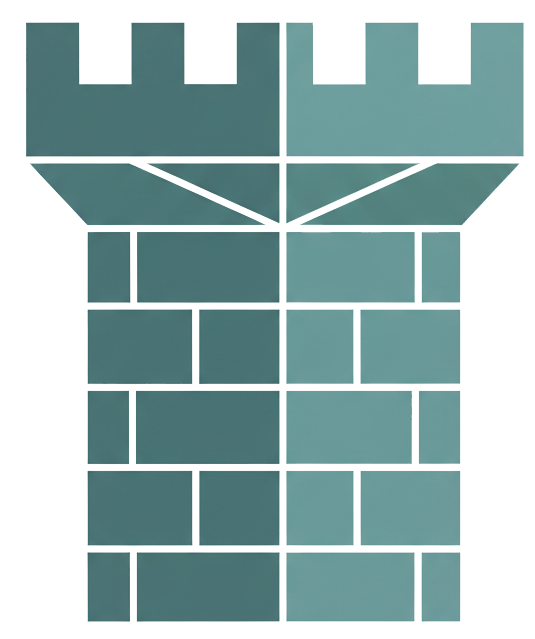
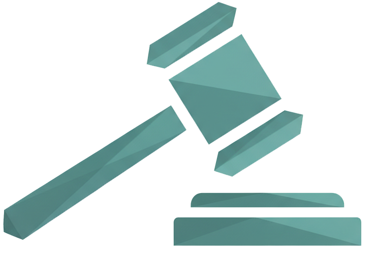
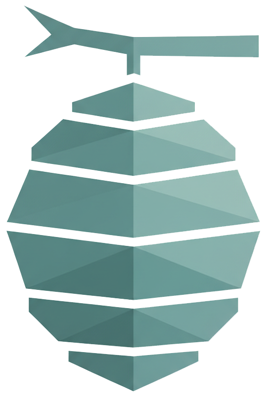
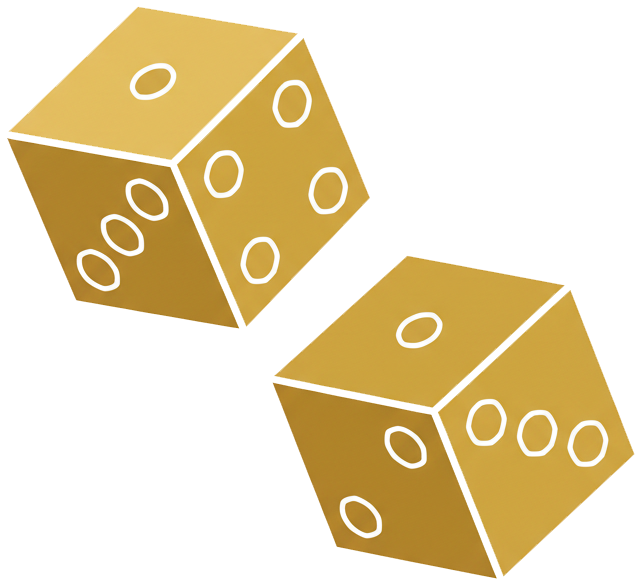

MBTI Kişilik Tipleri
Myers-Briggs — 16 Kişilik Tipi
Analistler

INTJ
Stratejist
Ana Özellikler
İlişkide
İlişkiye logik ve stratejik yaklaşır. Duygusal ifadeler konusunda zorlansa da, sadık ve güvenilir bir partnerdir. Derin bağ kurduğu kişiye büyük önem verir.
INTP
Düşünür
Ana Özellikler
İlişkide
Entelektüel uyum arayan bir partner. Duygusal ifadede zorlanabilir ama partnerini zihinsel olarak derinlemesine anlamaya çalışır. Bağımsızlığına önem verir.
ENTJ
Komutan
Ana Özellikler
İlişkide
İlişkide güçlü ve koruyucu bir rol üstlenir. Partnerinin gelişimini destekler. Bazen çok dominan veya iş odaklı olabilir, duygusal ihtiyaçları görmezden gelebilir.

ENTP
Tartışmacı
Ana Özellikler
İlişkide
İlişkide entelektüel uyumu çok önemser. Sürekli gelişme ve yenilik arar. Eğlenceli ve dinamik bir partner olsa da, derin duygusal bağ kurmakta zorlanabilir.
Diplomatlar

INFJ
Savunucu
Ana Özellikler
İlişkide
Derin ve anlamlı bağ kuran bir partner. Partnerini sezgisel olarak anlar. Aşırı idealist olabilir ve hayal kırıklığına uğrayabilir. Sınır koymakta zorlanabilir.
INFP
Arabulucu
Ana Özellikler
İlişkide
İlişkide otantiklik ve duygusal derinlik arayan bir partner. Romantik ve sadık olsa da, çatışmalardan kaçınma eğilimi gösterebilir. İdeal ilişki hayali peşinde koşar.

ENFJ
Kahraman
Ana Özellikler
İlişkide
İlişkide çok ilgili ve destekleyici bir partner. Partnerinin duygusal ihtiyaçlarını hisseder. Ancak kendi ihtiyaçlarını ihmal edebilir ve aşırı verici olabilir.

ENFP
Aktivist
Ana Özellikler
İlişkide
İlişkide eğlenceli, maceraperest ve tutkulu bir partner. Yeni deneyimler arar. Ancak dikkat dağınıklığı ve kararsızlık sorunları yaşayabilir.
Koruyucular

ISTJ
Denetçi
Ana Özellikler
İlişkide
İlişkide güvenilir ve sadık bir partner. Sözlerini tutar ve sorumlulukları ciddiye alır. Duygusal ifadelerde zorlanabilir ama sevgisini eylemlerle gösterir.

ISFJ
Koruyucu
Ana Özellikler
İlişkide
İlişkide çok ilgili ve bakıcı bir partner. Partnerinin ihtiyaçlarını sezgisel olarak bilir. Ancak kendi ihtiyaçlarını bastırma eğilimi gösterebilir.

ESTJ
Yönetici
Ana Özellikler
İlişkide
İlişkide güvenilir ve koruyucu bir partner. Düzeni ve istikrarı sağlar. Bazen çok katı veya kontrol edici olabilir, duygusal esnekliği geliştirebilir.

ESFJ
Diplomat
Ana Özellikler
İlişkide
İlişkide çok verici ve ilgili bir partner. Partnerinin comfort ve mutluluğu için çaba harcar. Onay arayabilir ve eleştiriye hassas olabilir.
Kaşifler
ISTP
Zanaatkar
Ana Özellikler
İlişkide
İlişkide bağımsız ve spontan bir partner. Duygusal ifadelerde ketum olsa da, eylemlerle sevgisini gösterir. Kişisel alanına çok önem verir.
ISFP
Maceracı
Ana Özellikler
İlişkide
İlişkide hassas ve sevecen bir partner. Sevgisini küçük ama anlamlı jestlerle gösterir. Çatışmadan kaçabilir ama derin duygusal bağ kurar.

ESTP
Girişimci
Ana Özellikler
İlişkide
İlişkide heyecan ve dinamizm arayan bir partner. Eğlenceli ve tutkulu olsa da, uzun vadeli planlama ve duygusal derinlikte zorlanabilir.
ESFP
Şovmen
Ana Özellikler
İlişkide
İlişkide çok eğlenceli ve sevecen bir partner. Hayatı renklendirir. Ancak ciddi konularda kaçınma eğilimi gösterebilir ve uzun vadeli planlama zorlaşabilir.